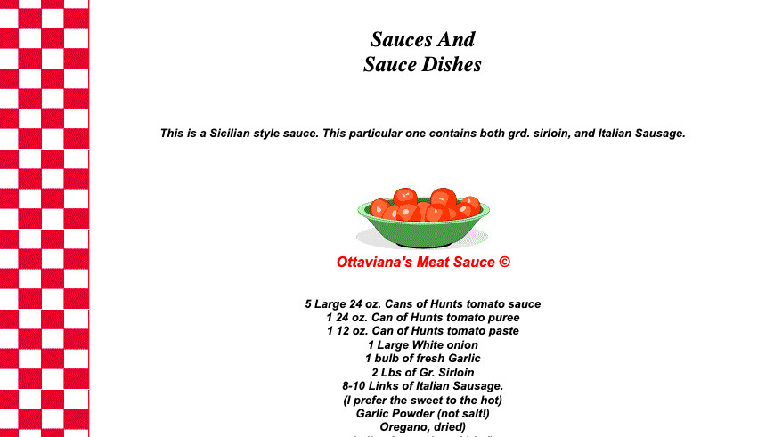
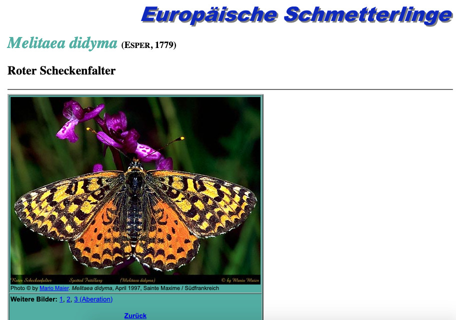
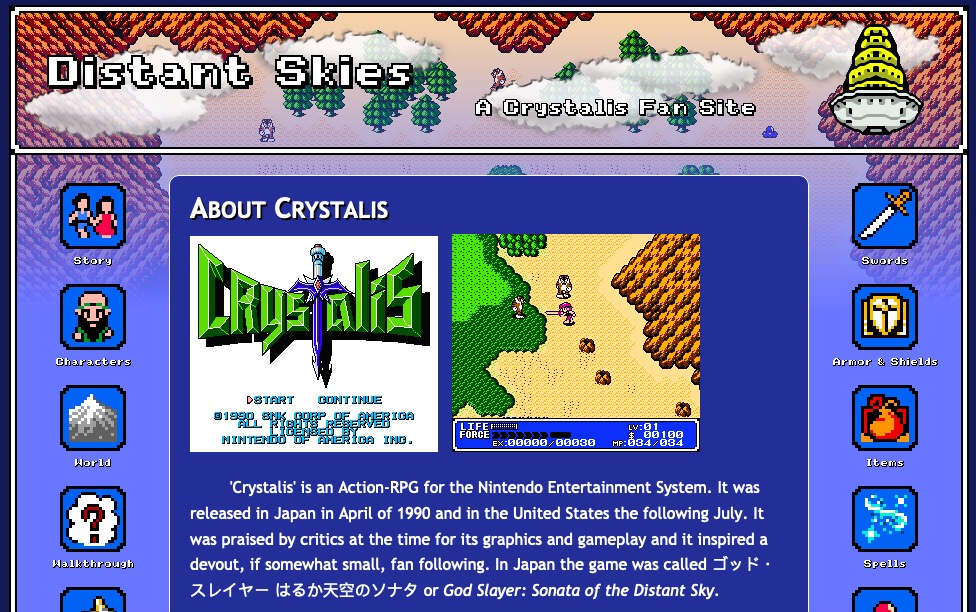
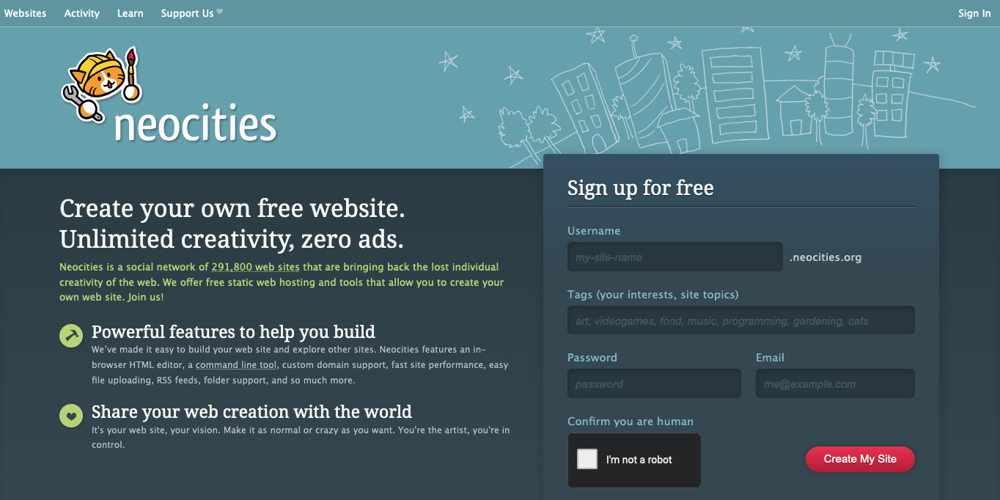

Modern Gatekeepers
Today, most of the time spent on the web is either on a small number of very dominant platforms like Facebook and LinkedIn, or mediated through them.
There is so much "content" that is constantly pushed at you as a user that very few of us actually venture out to browse and explore anymore. We simply don't need to. But these platforms thrive on "user engagement"—likes, comments, clicks and shares—and their algorithms are more likely to give visibility to content that generates this behavior. Instead of browsing, the web is for many an endless and often overwhelming stream of content and commentary picked out by algorithms based on what they think you already like and will engage with. It's the opposite of exploration.
Google has become the de facto gatekeeper of the web, an arbiter of what is useful and what should get visibility. Except, most websites that appear on the first page, the links that you are most likely to click on—less than 1% of searchers click on something in the second page—are designed to be there by optimizing for Google's algorithms. One consequence of this is that most of the websites that people get to "organically" are created by professionals and marketers who "position" themselves on those keywords. This means that the smaller, amateur web gets hidden in the shadows of web professionals who design around specific keywords and audiences.
The Commercial Web (of Marketing)
A 2008 article called by Smashing Magazine called 10 Principles Of Good Website Design[2] was the top result when I searched for "good web design" whilst writing this essay. There are many others, some more recent, but they all pretty much say the same thing. The author of this one even clearly begins by stating that "[...] user-centric design has established as a standard approach for successful and profit-oriented web design".
But the web is not always "profit-oriented" and it certainly does not need to be "user-centric" (and I say this as a UX consultant). If it were, there would be very little creativity and self-expression left. The rich diversity of the web would be reduced to the online equivalent of a massive, orderly, clinical shopping mall meant to drive sales. No, the web can just as well be "author-centered", hobby-centered or even be dog-centered![3]
It is worth remembering a website does not have to be a product; it can also be art. The web is also a creative and cultural space that need not confine itself to the conventions defined by commercial product design and marketing.
The Web as a Creative Space
With the dominance of the commercial web and the normalization of its code and techniques, it is easy for most people to think that the web is a complex machine. Most websites today are built with sophisticated content management systems, SEO and social media strategies, multiple plugins, detailed analytics and audience tracking, optimized for different breakpoints and served via a global CDN.
But the web is really a lot simpler than that. You really only need two things: a web host and HTML (and basic CSS for formatting). And you don't need to make it "user-centered"; much like the early webmasters on Geocities carving out their own corner of the web, you can express yourself any way you want. It’s the difference between product and art.
If the commercial web is "industrial", you could say that the small web is "artisanal". One is not better than the other. They serve different needs and both can co-exist in an open web. It would nevertheless be a shame if we only spent time on the commercial web and never got the opportunity to experience the creativity, passion and quirkiness of the small web.
Highlights: From the Past
To show you what the it can look like and how different it can be from modern websites, I have collected a few examples that I think illustrate the richness of the small web.
Ottaviana's Kitchen[4]
This website from 1996 is still up today and features a family's Italian recipes passed down from generation to generation:
My Grandparents were immigrants from Italy. They came to Ellis Island, in search of the great American dream. This was where my mother was born in Newark, NJ. The recipes were passed to her from her mother, and then passed to me from mine. Since I have no children of my own, what better way to pass on these recipes but on my web page so everyone can enjoy them, and maybe start their own tradition with them. So for now, Buon Appetito.
You can read the entire menu and find authentic recipes to sauces, soups, risotti, cookies and dessert, and much much more.
Europäische Schmetterlinge[5]
This is a German website about European butterflies created in 1998 and maintained until 2005 by Mario Maier. But it isn't just any old website about butterflies; this one is a near-exhaustive collection of almost all butterflies in Europe organized by genus/species, each with a description, an indication of its "flight time" and the corresponding caterpillar's plants of choice, along with photos (most taken by the author himself).
Some of the pages like this one on Agrodiaetus ainsae seem to have more information than currently available on Wikipedia! I originally found the Geocities version on Restorativland and then found this version that is currently up.
Distant Skies - A Crystalis Fansite[6]
A fan-made website about an action-RPG game called Crystalis:
'Crystalis' is an Action-RPG for the Nintendo Entertainment System. It was released in Japan in April of 1990 and in the United States the following July. It was praised by critics at the time for its graphics and gameplay and it inspired a devout, if somewhat small, fan following. In Japan the game was called ゴッド・スレイヤー はるか天空のソナタ or God Slayer: Sonata of the Distant Sky.
Built in the visual style of the game itself, the site provides detailed information about the story, characters, game world, spells and items in the game. Even though I don’t know the game, it’s fun to browse around.
Your Own Corner of the Web
As fun as it is to explore what's out there, the best part is really to join in and make your own website. Not on closed platforms or on social media mediated by ad companies, but simply in your own little corner of the web. It's the best way to see how simple and open the web really is.
You could easily put up those drawings you've been making, share your thoughts and ideas, or reviews of your favorite whiskies. Make a website to share your writing tips or your best recipes. Or a list of your favorite addresses in your city for travelers who might be visiting.
All you would need is to learn basic markup (HTML) and styling (CSS), set up a site on a free host like Neocities.org and start playing. As you can imagine, Neocities is a Geocities-like free web host (minus the ads) whose mission it is to "make the web fun again by giving you back control of how you express yourself online". Discovering and joining Neocities was one of the reasons I got so excited about the small web. You can spend hours and hours browsing through the many sites hosted there, or just get a free account to play with.
Resources
If you don't know how to make websites, HTMLDog has excellent tutorials to learn basic HTML and basic CSS. If you prefer video, Khan Academy has an excellent free course for beginners called "Making Webpages" looks very complete.
Other great (and free) resources include:
Final Thoughts
Another great thing about the web is that you can always view the source of any public website to take inspiration and learn. Make sure you pick simple, basic ones; the modern web is full of bloated websites that make HTML unreadable. The website this article is originally from, for example, only uses basic HTML and CSS and I invite you to play with the code to your heart’s content. It’s all in the public domain, so you can even copy all of it and modify it (and you don’t have to credit me or even link back, it’s all free).
The small web still exists and has a lot to offer.
It might not be as polished as the commercial web we're used to, but I hope I have, at the very least, piqued your curiosity and made you want to explore it too.